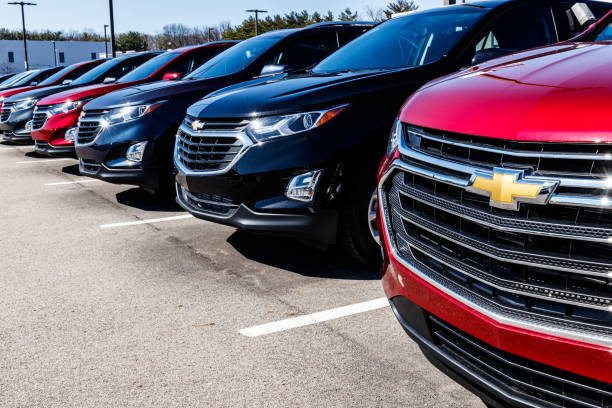
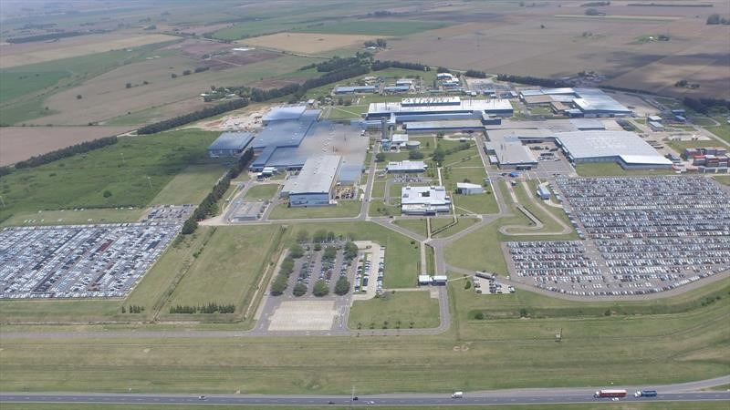
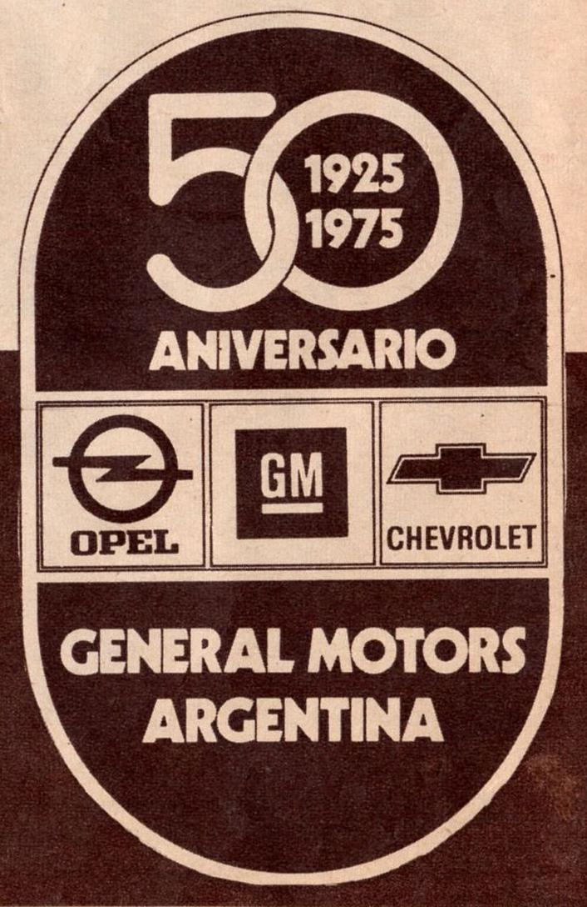
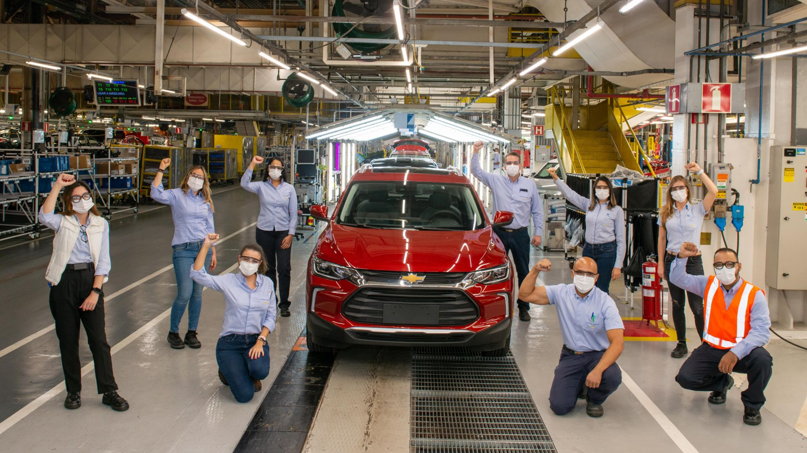

●En Chevrolet, somos una marca con más de 100 años de historia a nivel mundial y una presencia sólida en Argentina desde hace décadas. Nos dedicamos a ofrecer vehículos confiables, innovadores y accesibles, diseñados para acompañar a nuestros clientes en cada etapa de su vida.

●Comercializamos una amplia gama de modelos que incluyen autos, SUVs y pickups, como el Onix, Tracker, Cruze, S10 y Montana, todos desarrollados con los más altos estándares de calidad, tecnología de punta y un fuerte compromiso con la seguridad y el confort.

●Contamos con un moderno centro de producción en el Complejo Automotor de General Motors ubicado en Alvear, provincia de Santa Fe, desde donde abastecemos tanto al mercado local como a otros países de la región. Nuestra planta opera bajo estrictos procesos de eficiencia, sustentabilidad e innovación.

●En Chevrolet, creemos que la experiencia del cliente no termina con la compra del vehículo. Por eso, ofrecemos una extensa red de concesionarios oficiales en todo el país, donde brindamos atención personalizada, servicio postventa y repuestos originales. Algunos de nuestros puntos destacados se encuentran en:
○Autónoma de Buenos Aires y Gran Buenos Aires ○Rosario (Santa Fe) ○Córdoba Capital ○Mendoza○Salta

◆Seguimos avanzando con el compromiso de brindar soluciones de movilidad modernas, seguras y sustentables para todos los argentinos. En Chevrolet, nos mueve el futuro.◆
 Chevrolet
ComprarㅤㅤㅤRegistrarse
Chevrolet
ComprarㅤㅤㅤRegistrarse